ESSENTIAL QUESTIONHow did the U.S.-Soviet rivalry drag other countries into real wars?
TIMELINE
1947
Truman Doctrine promises U.S. help to resist communism.
1949
China becomes communist, and NATO forms.
1950-1953
Korean War turns Cold War rivalry into a hot war.
1956-1968
Soviet troops crush uprisings in Hungary and Czechoslovakia.
1991
The Soviet Union collapses, but Cold War effects remain.
In June 1950, families in Korea woke up to a war shaped by decisions made far beyond their homes. North Korean forces crossed the 38th parallel and attacked South Korea. Soon, the United States, the United Nations, China, and the Soviet Union were all part of the crisis. For Korean civilians, the Cold War was not an idea on a map. It was a real war moving through villages, roads, and families.
In June 1950, families in Korea woke up to war. North Korea crossed the 38th parallel and attacked South Korea. Soon, the United States, the United Nations, China, and the Soviet Union were involved. For Korean civilians, the Cold War was not just an idea. It was a real war in their lives.
This is how the Cold War often worked. The United States and the Soviet Union usually avoided fighting each other directly because both sides feared a larger war. Instead, their rivalry pulled other countries into wars, revolutions, invasions, and long struggles. The Cold War stayed “cold” between the superpowers, but it became hot for millions of people around the world.
This is how the Cold War often worked. The United States and the Soviet Union usually avoided fighting each other directly. They feared a much larger war. Instead, other countries were pulled into real wars and revolutions. Millions of people paid the price.
CHAPTER ONE
CONTAINMENT BECOMES A GLOBAL PROMISE
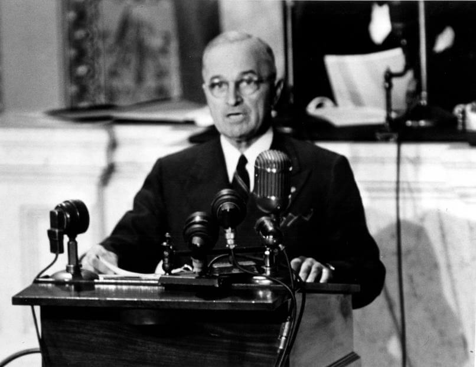
President Harry Truman asked Congress to support Greece and Turkey in 1947. This became the Truman Doctrine. Wikimedia Commons.
In 1947, President Harry Truman announced the Truman DoctrineU.S. promise to help countries resist communism.. The United States would support countries threatened by communist takeover. This became a major part of containmentStopping communism from spreading farther., the policy of stopping Soviet power from spreading. A promise that began with Greece and Turkey soon became a worldwide strategy.
In 1947, President Harry Truman announced the Truman Doctrine. The United States would help countries threatened by communism. This was part of containment. Containment meant stopping communism from spreading. A promise about Greece and Turkey soon became a global strategy.
The United States also used money as a weapon against communism. The Marshall PlanU.S. money to rebuild Western Europe. gave about $13 billion to rebuild Western Europe. U.S. leaders believed poor and hungry countries were more likely to support communist parties. Recovery became part of Cold War strategy because food, jobs, and rebuilt cities could also be political tools.
The United States also used money to fight communism. The Marshall Plan gave about $13 billion to rebuild Western Europe. U.S. leaders thought poor countries might turn to communism. Rebuilding Europe became part of Cold War strategy.
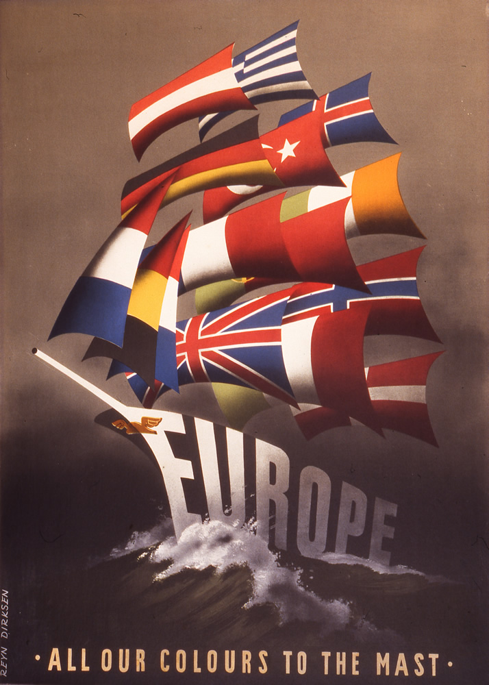
Marshall Plan poster, late 1940s. Rebuilding Europe also helped the United States contain communism. Wikimedia Commons.
In 1949, the United States and its allies created NATOMilitary alliance led by the United States., a military alliance. The Soviet Union later answered with the Warsaw PactMilitary alliance led by the Soviet Union.. By the 1950s, the world was divided into rival camps with weapons, money, and armies behind them. Local conflicts now carried the danger of superpower involvement.
In 1949, the United States and its allies created NATO. NATO was a military alliance. The Soviet Union later created the Warsaw Pact. By the 1950s, the world was split into rival camps. Local conflicts could now pull in powerful countries.
Real-world connection: When powerful countries promise to defend allies everywhere, local conflicts can turn into global crises.
Real-world connection: Local conflicts can grow when powerful countries promise to help allies.
DID YOU KNOW
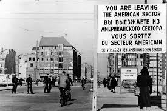
Checkpoint Charlie sign in Berlin.
One Cold War border sign later became a tourist photo spot, but its original message was deadly serious. It told people they were leaving the American sector of Berlin. On the other side, the wrong step could lead to arrest, interrogation, or a bullet.
CHAPTER TWO
THE COLD WAR TURNS HOT IN ASIA
In 1949, the Chinese Civil War ended with Mao Zedong’s communist victory. Mao created the People's Republic of ChinaThe communist government created in China in 1949.. To U.S. leaders, the largest country on earth had become communist. That made the Cold War feel much bigger and more dangerous.
In 1949, Mao Zedong won the Chinese Civil War. He created the People's Republic of China. U.S. leaders were shocked. The largest country on earth had become communist. The Cold War now felt bigger and more dangerous.
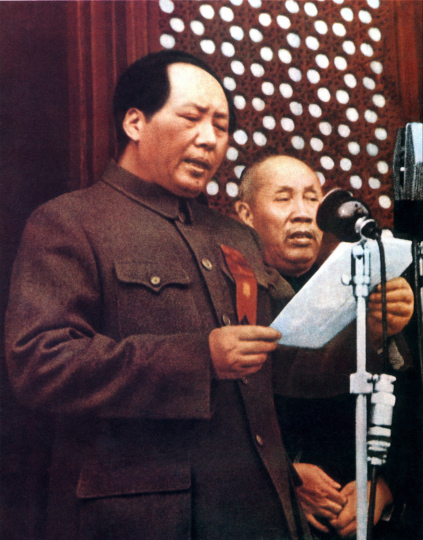
Mao Zedong proclaimed the People's Republic of China in 1949. Wikimedia Commons.
One year later, the Korean WarWar between communist North Korea and U.S.-backed South Korea. began. North Korea invaded South Korea in 1950. The United NationsWorld organization created after World War II., led mostly by the United States, defended South Korea. China later joined on North Korea’s side, turning Korea into one of the most dangerous fronts of the Cold War.
One year later, the Korean War began. North Korea invaded South Korea in 1950. The United Nations, led mostly by the United States, defended South Korea. China later joined North Korea's side. Korea became one of the most dangerous Cold War fronts.
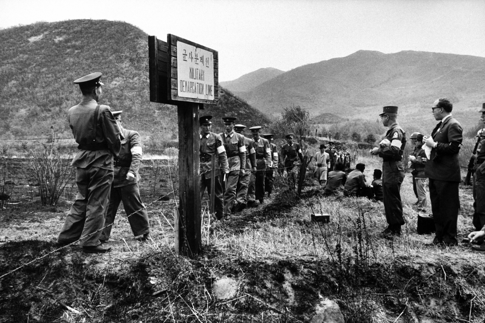
Korea became a divided Cold War battlefield. The war ended near the 38th parallel, close to where it began. Wikimedia Commons / National Archives search suggested.
The war ended in 1953 at almost the same place it began: the 38th parallel. That made it a stalemateA conflict where neither side clearly wins.. About 36,000 Americans died, and an estimated 3 million Korean and Chinese people died. The Cold War had turned into a real war for the people living there.
The war ended in 1953 near the place it began: the 38th parallel. That made it a stalemate. About 36,000 Americans died. Around 3 million Korean and Chinese people died. The Cold War became a real war for people in Korea.
FAST FACTS
THE COLD WAR AS A GLOBAL CONFLICT
$13Bin Marshall Plan aid helped rebuild Western Europe and fight communist influence.
3MKorean and Chinese people are estimated to have died during the Korean War.
1956was the year Soviet tanks crushed the Hungarian Revolution in Budapest.
1979marked the Soviet invasion of Afghanistan and a long proxy war.
CHAPTER THREE
REVOLUTIONS INSIDE THE SOVIET SPHERE
The Soviet Union controlled many Eastern European countries after World War II. These countries were called satellite statesCountries controlled by a stronger nearby power.. They had communist governments that followed Moscow’s orders, even when many people wanted more freedom. Cold War control did not only happen through speeches and treaties. It also happened through fear, censorship, and tanks.
After World War II, the Soviet Union controlled many Eastern European countries. These were called satellite states. They had communist governments that followed Moscow. Many people wanted more freedom. Soviet control also used fear, censorship, and tanks.
In 1956, protests broke out in Poland and Hungary. In Hungary, people demanded free elections and an end to Soviet control. Soviet tanks entered Budapest and crushed the uprising. Thousands were killed, and many more fled as refugees.
In 1956, protests happened in Poland and Hungary. In Hungary, people wanted free elections and less Soviet control. Soviet tanks entered Budapest. Thousands were killed. Many people became refugees.
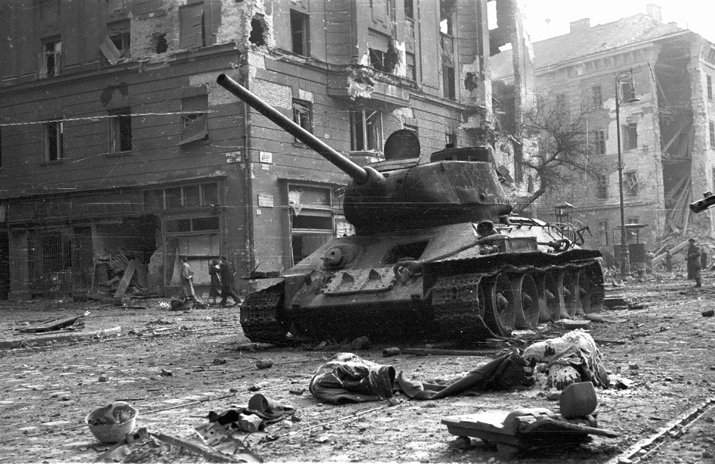
Soviet tanks crushed the Hungarian Revolution in Budapest, 1956. Wikimedia Commons.
In 1968, Czechoslovakia tried to create “socialism with a human face.” This reform movement became known as the Prague Spring1968 reform movement in communist Czechoslovakia.. It allowed more speech and more openness. The Soviet Union invaded and ended the experiment because it feared reform would spread.
In 1968, Czechoslovakia tried to reform communism. This was called the Prague Spring. People had more speech and openness. The Soviet Union invaded and ended it. Soviet leaders feared reform would spread.
Soviet-led forces entered Czechoslovakia in 1968 and ended the Prague Spring. Wikimedia Commons.
These uprisings showed a major Cold War truth: Soviet power looked strong from the outside, but many people inside the system wanted out. The Soviet Union could control countries with tanks. But tanks could not make people believe that Soviet rule was fair.
These uprisings showed an important truth. Soviet power looked strong. But many people inside the system wanted freedom. Tanks could control streets. They could not control what people believed.
ART SPOTLIGHT
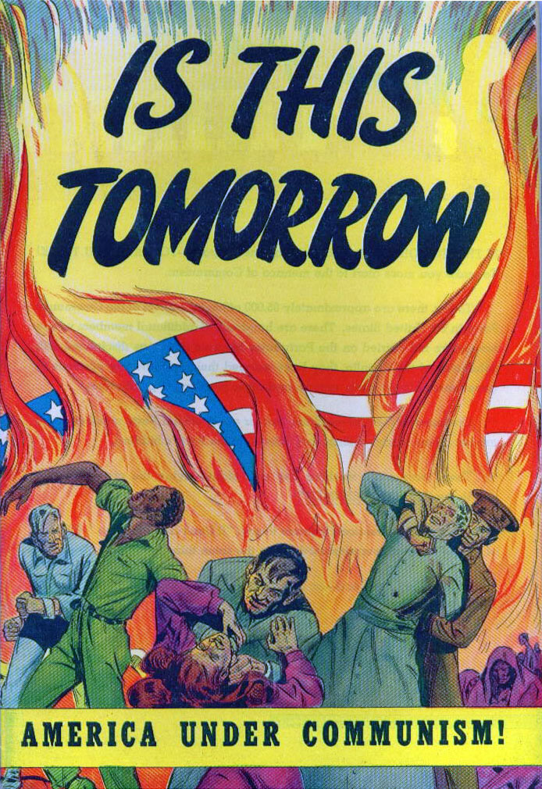
Is This Tomorrow: America Under Communism! — Catechetical Guild Educational Society, 1947. This anti-communist comic book cover turned Cold War fear into a dramatic warning about what Americans were told could happen if communism spread.
This cover looks like entertainment, but it was also political education. It used the visual language of comic books to make communism feel immediate, emotional, and dangerous. That matters because Cold War conflicts were fought with weapons, money, and alliances, but also with images that trained people what to fear.
CHAPTER FOUR
PROXY WARS AND SOVIET COLLAPSE
A proxy warA war where big powers support other fighters. happens when powerful countries support opposing sides instead of fighting each other directly. The United States and Soviet Union did this in Vietnam, Angola, Mozambique, Nicaragua, Afghanistan, and other places. Local people fought and died while superpowers sent money, weapons, training, and political pressure. The fighting was local, but the pressure often came from far away.
A proxy war happens when powerful countries support other fighters. The United States and Soviet Union did this in Vietnam, Angola, Mozambique, Nicaragua, Afghanistan, and other places. Local people fought. Superpowers sent money, weapons, and training. The fighting was local, but outside powers shaped it.
U.S. GOAL
Stop communism from spreading and protect allies or friendly governments.
SOVIET GOAL
Support communist movements and weaken U.S. influence around the world.
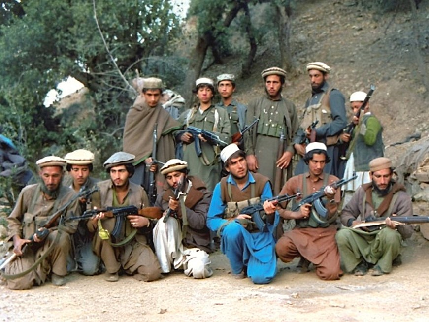
Afghan mujahedeen fighters during the Soviet-Afghan War. The United States supported fighters resisting Soviet forces. Wikimedia Commons.
In 1979, the Soviet Union invaded Afghanistan to support a communist government. The United States funded mujahedeen fighters who resisted the Soviets. Some networks that grew from this war later helped form the Taliban. A Cold War decision created consequences that lasted long after the Cold War ended.
In 1979, the Soviet Union invaded Afghanistan. It supported a communist government. The United States helped mujahedeen fighters resist the Soviets. Some networks from this war later helped form the Taliban. Cold War choices had long-term effects.
By the 1980s, the Soviet system was under huge pressure. It spent too much on the military, struggled with a weak command economy, and faced resistance from people in satellite states. The arms race with the United States drained money and energy. Nationalist movements grew stronger, and many citizens stopped trusting the system.
By the 1980s, the Soviet system was in trouble. It spent too much on the military. Its economy was weak. People in satellite states resisted Soviet control. The arms race cost too much. Many citizens stopped trusting the system.
OVEREXTENSION
The Soviet Union tried to control too much with too many troops and too much money.
ECONOMIC FAILURE
The command economy could not keep up with people’s needs or the arms race.
NATIONALISM
People in satellite states wanted their own nations and freedom from Moscow.
LOSS OF TRUST
Many citizens stopped believing the system could improve their lives.
In 1991, the Soviet Union collapsed. The Cold War ended, but the effects remained. Borders, alliances, weapons, refugee crises, and memories of proxy wars still shape the world. The rivalry ended, but the people who lived through its conflicts carried the consequences forward.
In 1991, the Soviet Union collapsed. The Cold War ended. But its effects stayed. Borders, alliances, weapons, refugees, and memories of proxy wars still matter. The rivalry ended, but people still lived with its consequences.
PRIMARY SOURCE MOMENT
TRUMAN PROMISES TO CONTAIN COMMUNISM
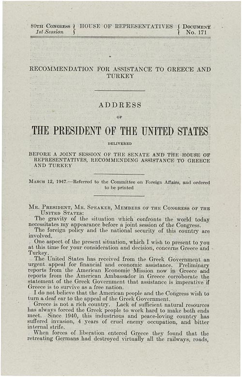
Document or transcript image from Truman's March 12, 1947 address to Congress announcing the Truman Doctrine. Truman Library / National Archives search suggested.
PRIMARY SOURCE
“I believe that it must be the policy of the United States to support free peoples who are resisting attempted subjugation by armed minorities or by outside pressures. I believe that we must assist free peoples to work out their own destinies in their own way.”
President Harry Truman, address to Congress on the Truman Doctrine, 1947
Truman framed containment as a defense of freedom. This source helps explain why the United States became involved in conflicts far from home during the Cold War.
THEN AND NOW
SUPERPOWER RIVALRIES TURN LOCAL CRISES INTO GLOBAL STRUGGLES.
1950S-1980S
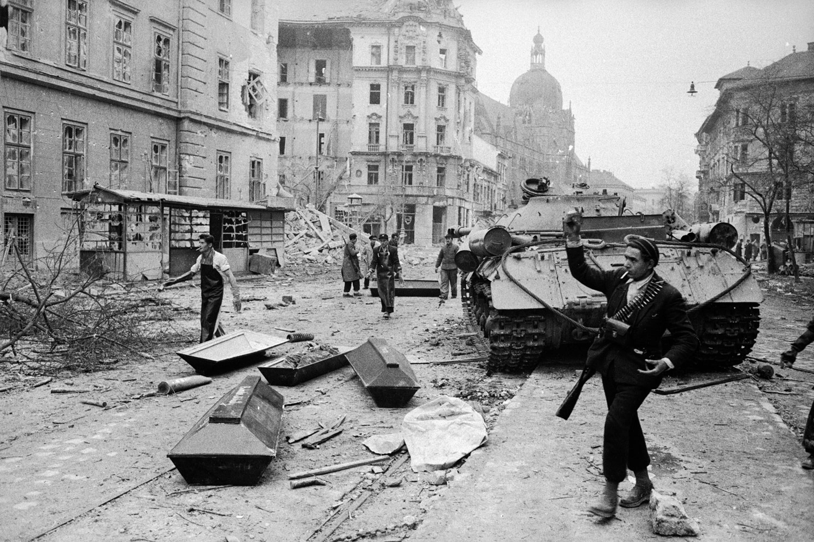
In 1956, Hungarians filled the streets to demand more freedom from Soviet control.
NOW
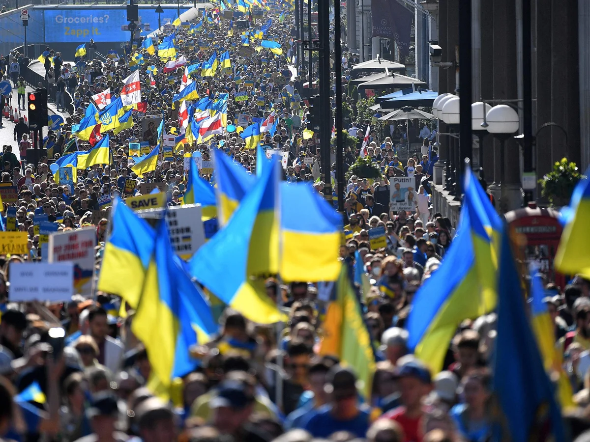
Today, people still organize, protest, and demand sovereignty when powerful countries shape local conflicts.
THEN
During the Cold War, local conflicts often became part of the larger rivalry between the United States and the Soviet Union. In places like Hungary, Korea, Vietnam, Afghanistan, Angola, and Nicaragua, ordinary people lived inside crises shaped by outside powers. The historical image shows that people were not just dots on a map; they marched, resisted, fled, fought, and demanded a future.
NOW
Modern conflicts still often involve outside governments, weapons, sanctions, aid, alliances, and information campaigns. People living in those places may face choices shaped by powers far beyond their borders. The modern image shows agency: people still organize publicly to defend sovereignty, support communities, and pressure powerful governments.
CONNECTION
The connection is that powerful countries can turn local struggles into global contests. Cold War history helps students see why maps of conflict can look simple from far away, while real people experience fear, displacement, and loss up close.
How should powerful countries think about the people who live inside the conflicts they influence?